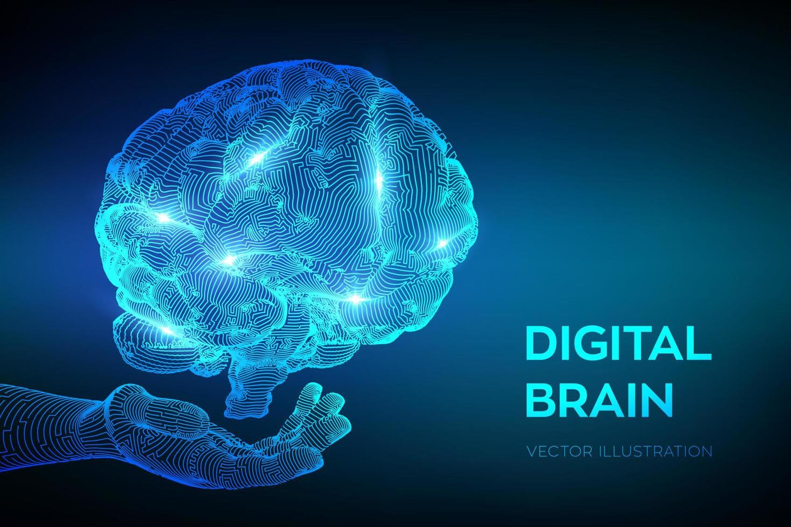

¿Qué es la IA?
La Inteligencia Artificial (IA) es la simulación de procesos de inteligencia humana por parte de máquinas, especialmente sistemas informáticos. Estos procesos incluyen el aprendizaje, el razonamiento y la autocorrección.
Aplicaciones Clave
La IA no es solo ciencia ficción; está en todas partes:
- Procesamiento del Lenguaje Natural (PLN): Permite a las máquinas entender y responder al texto y la voz (ej. Asistentes virtuales, chatbots).
- Visión por Computadora: Permite a las máquinas interpretar y entender el mundo visual (ej. Coches autónomos, reconocimiento facial).
- Machine Learning (ML): Un subconjunto de la IA que permite a los sistemas aprender de los datos sin ser programados explícitamente.

Dato Interactivo del Día
¿Sabías que la IA también puede ser creativa? Haz clic para descubrir un dato.